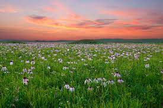
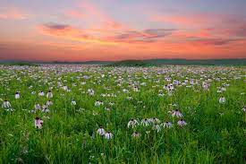

These songs remind us, to be kind on each other and to the nature itself.
For it is our nature to help and thrive through one another but we when we defy that alot more awful things happens. when we fail to take care of nature, it fails and we fall.